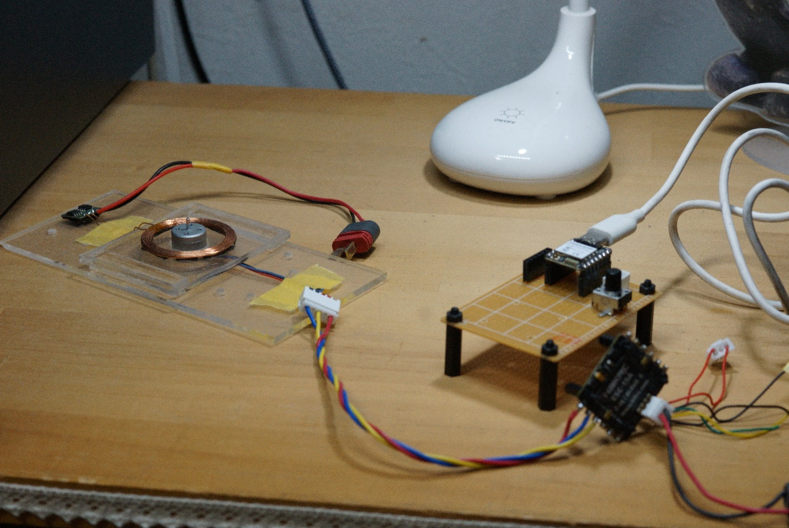

ドローン2nd
ドローン1stは飛んだものの、安定的な飛行とは言えない結果となった。マイコンをESP32C6に変えて、ESCとの通信をDshot600に変更して、再挑戦する。

Dshot600でモーターが回った。まだこんな感じ
お勉強：クォータニオンの説明（AIによる解説）
ドローン1stでもクォータニオンを使用していますが、ちゃんと理解していなかったのと、姿勢制御はオイラー角を使用していたので、今回はクォータニオンのままの状態で制御してみる。
なぜ「オイラー角（ロール・ピッチ・ヨー）」ではダメなのか？
私たちが普段使う「右に20度（ロール）、前に10度（ピッチ）、左に30度（ヨー）」という表現（オイラー角）は、人間にとって非常に理解しやすい方法です。しかし、これは「1つの軸ずつ、順番に回転させる」というルールに基づいています。順番に回していくと、ピッチが真上（90度）を向いた瞬間に、ロール軸とヨー軸が完全に重なってしまい、「どっちに回しても同じ動きになってしまう（自由度が1つ消える）」という現象が起きます。これがジンバルロックです。ドローンがこの状態になると、自分が今どう傾いているのかマイコンがパニックを起こし、制御不能になって墜落してしまいます。
クォータニオンの考え方：1発で回す！
オイラー角が「3つの軸で順番に回す」のに対して、クォータニオンは「任意のナナメの軸を1本決めて、そこを中心に1発でギュッと回す」という考え方をします。
この「どのナナメの軸（3次元の方向）」を「どれくらい回す（角度）」かという情報を、4つの数字（w, x, y, z）にまとめたものがクォータニオンです。
w ： どれくらい回すか（回転角の情報を担当）x, y, z ： どの向きの軸で回すか（3次元の回転軸の担当）最初から「1本の軸で1発で回す」ため、軸が重なるという概念自体がなく、ジンバルロックが絶対に起きません。
ドローンのプログラムの中で何が起きている？
「目標の姿勢」と「今の姿勢」のズレ（エラー）を計算するとき、オイラー角なら引き算ですが、クォータニオンでは掛け算（逆クォータニオンの合成）を使います。これにより、「あとどのナナメ軸に、どれくらい回せば目標に追いつくか」が分かります。